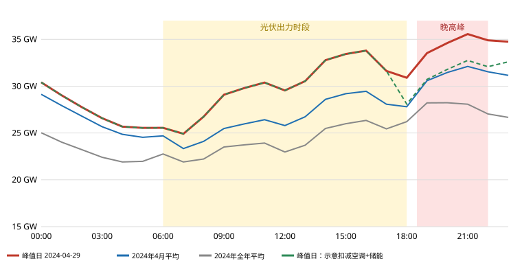

标签说明：
已核实 数字已在原始来源中读到 ·
推算 由我们用已核实数据计算（脚本见下）·
复核估算 来自本研究独立复核的筛选性估算，基于已列明但大多缺乏来源的假设，仅供参考 ·
假设 我们自己的建模取值。
核心结论
泰国不缺装机，缺的是便宜的燃料和晚间的供电能力。 2024 年签约装机 51.4 GW，峰值 36.5 GW，备用率约 41% 推算 [R2]。2025 年燃气发电占国内发电量 65.5% 推算 [R1][R7]，进口 LNG 已是边际燃料：按 2026 年 7 月亚洲 LNG 价格（超过 21 美元/百万英热），仅燃料成本就约 5–5.5 泰铢/度 推算 [R9]。系统高峰已移到晚上。 2023–2024 年有 97% 的日子，当天峰值出现在 19:00–21:59；2024 年小时最高负荷 35.6 GW，出现在 4 月 29 日 21:00 推算 [R3]。没有储能的光伏在这个时段出力为零。"效率低、浪费大"这个判断只对一半。 电网损耗约为发电量的 7%（PEA 5.0%，MEA 2.1%），在区域内属中等，不是主要问题 已核实 [R4][R5][R6]。最大的实物浪费在制冷：泰国市场上最好的空调比主流在售机型省电 41–52% 推算 [R18]。在成本层面，CSIS 与 IEA 的分析指出，备用容量偏高、燃料合同中的照付不议条款缺乏灵活性，推高了系统成本 [R10][R11]。最便宜的办法在需求侧。 筛选性成本：空调改造约 0.76 泰铢/节省一度电，楼宇能源管理约 0.9，屋顶光伏约 2.1 泰铢/度，新建 LNG 燃气电厂约 4.2，晚间供电的"光伏+储能"约 6.45 复核估算 。我们用有来源的输入做了交叉验证，排序相同，但区间更宽（空调 0.9–3.6；屋顶光伏 1.6–1.9；新建燃气 3.0–6.1）推算 。压晚高峰，主要靠空调。 空调能效升级约可削减晚峰 2,150 MW，模型中的储能方案约 660 MW 复核估算 。空调用电大头在居民和小商铺，不在大型楼宇。家庭把一台旧的 1.5 匹（12,000 BTU）空调换成高效变频机，约 2–4 年回本；门槛是一万多泰铢的前期支出，因此对政府最省钱的工具是零息分期、从电费中扣还 复核估算 。对中国高效空调来说，关税不是瓶颈。 自中国进口的分体/窗式空调在东盟—中国自贸协定下税率为 5%（最惠国税率 30%）已核实 [R31]。泰国本身就是全球最大的空调出口国之一（2024 年出口 68.9 亿美元；CLASP 2019 年评估约占全球出口 22%，仅次于中国）已核实 [R32][R18]。真正的约束是前期成本、融资、安装质量，以及旧机存量更新慢。
一、问题
1.1 高度依赖燃气，LNG 决定边际成本
指标 数值 状态 / 来源 燃气占国内发电量（2025） 65.5% 推算 EPPO [R1]；Ember 数字相同 [R7]进口电（主要为老挝水电）占总供电（2025） 17.2% 推算 [R1]LNG 占天然气供应 约 29%（2024，CSIS）· Ember 口径：40%（2024）→ 60%（2035） 已核实 [R10][R15]亚洲 LNG 价格 2026 年供应冲击前约 10.5 美元/百万英热 → 2026 年 7 月超过 21 美元 已核实 [R9]电价中的容量费 约 0.63 泰铢/度，约占基础电价 17%（2026 年初，CSIS 估算） 已核实 [R10]容量系数低于 10% 的燃气电厂（2025，IEEFA 统计） 7 座 已核实 [R8]2026 年 9–12 月平均电价（不含增值税） 3.95 泰铢/度 已核实 [R25]
关于合同机制的说明：泰国的购电合同普遍包含与可用容量挂钩的容量费，燃气供应合同包含照付不议条款。这是国际上长期购电/购气合同的常见设计，本身并非违规。IEA 与 EGAT 的联合研究认为，这类条款限制了系统调度的灵活性 [R11]；CSIS 与 IEEFA 认为，在备用率较高时，它们会推高电价 [R10][R8]。以上是这些机构各自的观点。
1.2 晚高峰

2024 年 EGAT 系统小时负荷（五大区合计）。数据：EGAT 官网，由 Bunnak（2025）存档于 Zenodo，CC-BY-4.0 [R3]。整点快照会低估官方瞬时峰值（2024 年 36,478 MW [R2]；2026 年 4 月 22 日 20:50 全国峰值 36,759 MW [R9]）。绿色虚线仅为示意 ：扣减复核估算中的空调节电（2,150 MW，18:00–24:00）与储能（660 MW，18:00–23:00）后，当天峰值会移到下午 16:00，实际削峰约 1,760 MW，而不是 2,810 MW。削峰措施必须对照全天负荷曲线来确定规模。脚本：scripts/hourly_profile.py。
晚高峰要点 数值 状态 当日峰值出现在 19:00–21:59 的天数占比 96.7%（2023）· 97.0%（2024） 推算 [R3]月均负荷率 80.7%（2019）→ 77.6%（2025），峰值增长快于用电量 推算 [R1]20:00–21:00 屋顶光伏出力 无储能时为 0 MW 物理事实
1.3 已有规划
《电力发展规划 2026》草案（2026 年 9 月 8 日起公开征求意见）计划 2026–2037 年新增 50.9 GW：光伏 24.3 GW、电池储能 14.5 GW、燃气联合循环 9.1 GW、风电 2.7 GW、需求响应/分布式 2.66 GW；首台 300 MW 小型模块化反应堆（SMR）定在 2037 年；数据中心高情景 8.8 GW 已核实 [R23]。因此核电在未来几年不起作用。
二、能量损失在哪里
环节 泰国数据 对比 含义 A. 发电 EGAT 机组平均净热耗率 7,903 Btu/kWh（2024），效率约 43% 已核实 [R2] 现代联合循环约 7,100 Btu/kWh 约 57% 的热损失大多由热力学决定，可改进的只是约 10% 的燃料 B. 备用容量与合同 备用率约 41%（2024）推算 ；容量费约 0.63 泰铢/度 已核实 规划常用备用率约 15% 这是钱的损失，不是能量损失；要靠规划与合同设计解决，而不是靠设备 C. 电网 输配损耗 7.16%（2023）已核实 [R4]；PEA 5.03%（2024）[R5]；MEA 2.13%（2022）[R6] 越南 6.6%、日本 4.9%、中国 3.4%（2023）[R4] 降到日本水平每年约省 5 TWh，约为燃气发电的 4% 推算 D. 终端：制冷 63 家酒店中空调占用电 57% [R28]；12k BTU 主流机型 SEER 13.0，最佳机型 27.3 [R18] 最佳技术泰国本土即可生产 [R14] 同样制冷量少用 41–52% 的电 推算 ；标准与标识升级可在 2030 年前使空调用电减少约 18% [R18] E. 其他终端 六类设备能效标准到 2040 年每年约省 18 TWh [R19] — 照明、电机、变压器、冷藏
量级对比（不能相加）：2025 年燃气发电 123 TWh · 电网降损到日本水平约 5 TWh/年 · 设备能效标准到 2040 年约 18 TWh/年（其中空调约 11 TWh）· 发电量减售电量 19 TWh（损耗加自用的上限）推算 。终端能效的潜力是电网降损的 2–3 倍。
三、研究机构怎么看，谁在做规划
议题 基本共识 分歧 燃气 / LNG LNG 依赖上升是价格与供应安全的主要风险（IEA [R13]、Ember [R15]、CSIS [R10]、IEEFA [R8]、朱拉隆功大学能源研究所与 Agora [R16]） 是否新建燃气电厂：规划草案包含 9.1 GW [R23]；Ember 的最低成本路径用光伏+储能替代计划中约 2 GW 新燃气 [R15] 制冷能效 制冷是需求增长的主要驱动，标准可大幅压低用电。IEA：制冷占东南亚建筑用电 16%，2035 年约 30% [R13]。LBNL：仅空调能效一项，2030 年可削减泰国峰值负荷 5–12 GW [R20]。CLASP：2030 年空调用电 −18% [R18]。ERIA：强化政策下 2050 年一次能源比基准低 25% [R22] 各家方法不同，量级不一；LBNL 发现泰国高端市场已较高效（变频约占销量 48%），差距在旧机存量和低端机 [R21] 减排 IEA 与 EGAT、能源部的联合研究：按 PDP2018，电力排放将在 2030 年超目标 44%、2037 年超 80%；到 2030 年再增加 32 GW 风光可弥补大部分缺口 [R12] Ember 认为泰国风电不具成本竞争力；规划草案仍列入 2.7 GW [R15][R23] 电网损耗 没有机构把泰国电网损耗（约 7%）列为主要问题 [R4][R20] — 灵活性 IEA 与 EGAT：在 2021 年条件下，燃料合同灵活化可降运行成本约 2%，电厂改造不到 0.05%，储能不到 0.1% [R11] 此后电池大幅降价（2025 年全球交钥匙均价约 117 美元/kWh [R27]），Ember 与规划草案都已纳入大规模储能 [R15][R23] 政策 TDRI：由普遍补贴转向定向补贴、推行分时电价、"能效优先"改造空调/照明/控制系统、打通节能计划与电力规划 [R17] —
谁在做技术规划。 能源部下属的 EPPO 是国家能源政策委员会秘书处，并主持负荷预测工作组；需求预测采用计量经济与终端用途模型（PDP2015 用法政大学模型，2024 草案用 NIDA 长期模型）。EGAT 起草电源规划，并与 IEA 合作搭建了泰国电力系统 PLEXOS 模型。EPPO 人员接受过 SEI 的 LEAP/NEMO 培训，GIZ 支持 EPPO 的"能源建模数据实践社群"。ERC 负责电价监管（含每四个月调整一次的 Ft），DEDE 负责建筑节能规范和节能计划（EEP 2024 草案：2037 年能源强度降 36%），长期气候战略使用 AIM/EndUse 与 AIM/CGE 模型。完整机构表（工具、报告、来源）：research/INSTITUTIONS.zh.md （English ）。
四、成本比较
4.1 本页采用的筛选性成本 复核估算
方案 泰铢/度 口径 对晚高峰的作用 空调改造 + 控制 ≈0.76 节省 ≈2,150 MW 楼宇能源管理 ≈0.9 节省 部分（楼宇晚间多已下班） 屋顶光伏（自用） ≈2.1 供应，白天 20:00–21:00 约为 0 新建 LNG 燃气联合循环（LNG 基准 14 美元） ≈4.2 供应 稳定出力 光伏 + 储能（晚间电量） ≈6.45 转移 ≈660 MW（模型中的储能规模）
这些数字的来历： 由 review/codex-energy/analysis/cost_curve.py 读取 review/codex-energy/assumptions.yaml 可以完整复现（实际折现率 6%，汇率 35 泰铢/美元）。该文件中多数输入标注为 estimate: true（例如空调改造 12,000 泰铢/kW、每 kW 每年省 2,200 度）。光伏+储能 ≈ 屋顶光伏（2.11）+ 储能转移（4.35）。空调 2,150 MW 是晚间负荷的 5%，而该情景同时加入了 8.8 GW 数据中心高情景；按当前负荷，5% 约为 1,780 MW。这些不是实测值 ，而是复核后的筛选数字；因其取代了早期草稿，本页以其为主。
4.2 用有来源输入的交叉验证 推算
方案（我们的模型，实际折现率 6%） 泰铢/度 主要来源输入 24k BTU 空调：自然更换时买最佳机型而非主流机型 0.94 泰国市场主流与最佳机型的价格和 SEER、年运行 2,920 小时、寿命 10.5 年（CLASP 2019）[R18] 12k BTU 空调：同上 2.25 提前更换（按新机全价），家庭时长 / 双倍时长 假设 2.7–3.6 / 1.4–1.8 居民屋顶光伏 1.61–1.93 25,000–30,000 泰铢/kWp；年发电 1,370 度/kWp（IEEFA 2026）[R9] 储能附加成本（每放电一度） ≈1.64 交钥匙 117 美元/kWh（BNEF 2025）[R27]；泰国本地安装成本未公开 现有利用率低的燃气机组，仅燃料（LNG 10.5 / 21 美元） 2.5–2.8 / 5.0–5.5 热耗率 7,903 Btu/kWh（EGAT 机组平均）[R2]；7,137 为现代联合循环基准 假设 新建 LNG 联合循环（LNG 10.5 / 21 美元），容量系数 50% 假设 3.0–3.3 / 5.5–6.1 923 美元/kW（EGAT 招标估算，经 IEEFA 引用）[R8] 参照 平均电价 3.95 · 分时峰价 5.11 · 谷价 2.60 [R25][R26]
两种算法排序一致：空调能效 < 屋顶光伏 < 新建燃气 ；晚间储能每度最贵，但它是 21:00 唯一不烧燃料的稳定选项。没有公开成本的措施（楼宇控制、需求响应、降损）在 model/breakeven.csv 中以"最高可承受前期投入"表示。
五、空调能效政策
5.1 浪费在哪里
在装有空调的泰国家庭中，空调是最大的单项用电：全国抽样调查（2018）为家庭用电的 26.5%；后续研究引用的 EPPO、DEDE 口径为 60–65%，统计基础不同（如只计有空调家庭）[R35]。
约 55% 的家庭拥有空调（2026 年媒体报道）[R34]；国家统计局口径按年份和定义为 39–44% [R33]。年销量约 160 万台（2023）[R36]。
存量仍以定频机为主：2019 年变频机型占 32% [R18]，2021 年约占销量 48% [R21]；2010 年版最低标准只要求 EER 约 2.5–2.8 W/W，而泰国产最佳机型达 5.6 W/W [R18][R14]。
空调用电筛选性拆分：全国约 64 TWh/年、约 2,160 万台、20:00 约 13 GW（约占晚峰 38%，区间 31–46%）。按电量，居民约 35 TWh、小商铺/中小企业约 19 TWh，酒店、商场、办公楼和政府建筑合计约 10 TWh 复核估算 。酒店是好的切入点（空调占其用电 57% [R28]），但不是量最大的地方。
使用方式同样重要：设定温度每调高 1°C 省电约 4.5%（EGAT）到 6–10%（U4E）[R39][R19]；自 2026 年 3 月起，政府机关须把空调设在 26–27°C 并节电 10%，预计每月省 720 万度 [R38]。
5.2 家庭账本与项目规模 复核估算
旧定频 → 高效变频（电价 4.2 泰铢/度） 夜间使用（8 小时/天） 全天使用（14 小时/天） 9,000 BTU 回本 4.5 年 2.6 年 12,000 BTU（1.5 匹） 4.0 年 2.3 年 18,000 BTU 3.8 年 2.2 年
项目设计 政府成本 / 每削峰 1 kW 政府成本 / 每生命周期节省一度 返利 3,000 泰铢/台 ≈8,300 泰铢 ≈0.17 泰铢 返利 5,000 泰铢/台 ≈13,900 泰铢 ≈0.28 泰铢 电费账单零息分期（政府风险分担 1,500 泰铢/台） ≈4,200 泰铢 ≈0.08 泰铢
规模：每更换 100 万台，晚峰约降 360 MW；500 万台约 1.8 GW 复核估算 。脚本：review/codex-ac/build_research_outputs.py（调用公开的电价、贸易与统计数据接口）。
5.3 关税与贸易
税号 8415.10.10（分体/窗式空调，制冷量 ≤26.38 kW）：最惠国税率 30%，东盟—中国自贸协定 2024–2026 年 5% 已核实 [R31]。72,000 BTU 以下空调的 15% 消费税已于 2009 年降为零 [R37]。
2024 年泰国 HS 8415 出口额 68.9 亿美元 已核实 [R32]；CLASP（2019）估计泰国约占全球房间空调产量 9%、全球出口 22%，仅次于中国 [R18]。
零售价样本并未显示中国市场机型在加上关税和增值税后系统性更便宜 复核估算 。结论：继续降关税作用有限；融资、安装质量、旧机回收和更严格的标准更重要 。
5.4 一个可操作的空调政策包
电费账单零息分期 ：通过 MEA/PEA 购买最高能效等级变频机，旧机回收销毁。定向返利 （例如 3,000–4,000 泰铢/台），面向低收入家庭和小商铺，仅限最高能效档 复核建议 。集中采购 压低高能效机型价格，优先采购泰国境内已有工厂的产品。逐步提高最低能效标准和标识门槛 （最低能效标准上一次大修订是 2010 年）[R18]。设定温度、清洗保养与安装工培训宣传 ；在一部分装表计量的家庭和楼宇中实测节电效果（测量与验证）。
六、政策选项
时间 选项 理由 0–2 年 空调换新与温度设定计划（见第五节） 每度最便宜，直接压 21:00 高峰 扩大分时电价与有偿需求响应 EGAT 试点为 50 MW [R29]；EPPO 曾估计潜力最高 1,250 MW [R40] 改革屋顶光伏规则（如净计量、加快审批），并配储能覆盖晚间 IEEFA 认为 2.2 泰铢的收购价低于零售电价，抑制了安装意愿 [R9] 提高燃料与购电合同的灵活性 IEA 与 EGAT：运行成本最多可降约 2% [R11] 商业楼宇能源管理与冷水机组升级 约 0.9 泰铢/度 复核估算 ；建筑节能规范只覆盖 2,000 m² 以上的新建/改建建筑 2–10 年 按规划草案大规模建设光伏 + 储能（24.3 GW / 14.5 GW） 替代 LNG；储能覆盖晚间 [R23][R15] 有针对性的配电网升级 有价值，但节电上限约 5 TWh/年 数据中心负荷配套绿电直购与高效制冷 8.8 GW 高情景会改变晚高峰形态 [R23] 2037 年以后 小型模块化反应堆 首台计划 2037 年；预可研协议于 2026 年 9 月签署 [R30]
七、谁来决策
决策事项 机构 国家能源政策、批准电力发展规划、能源定价规则 国家能源政策委员会 → 内阁 起草规划（PDP、EEP、AEDP）、负荷预测、能源基金管理 能源部 / EPPO 电源规划、系统调度、需求响应与储能采购 EGAT 电价、Ft、分时及需求响应电价、第三方过网费、牌照 能源监管委员会（ERC） 能效标准、标识、建筑节能规范、节能补贴 DEDE（EGAT 负责 5 号节能标识） 计量、收费（账单分期的渠道）、屋顶光伏并网 MEA（曼谷都会区）/ PEA（其余地区） 数据中心与设备制造的投资优惠 投资促进委员会（BOI）[R24]
八、数据与方法
8.1 下载
8.2 脚本（Python 3，pandas）
8.3 主要假设
实际折现率 6%（敏感性 3% 与 10%）；汇率 33.2 泰铢/美元（我们的模型）或 35（复核模型）。
LNG 价格 10.5 与 21 美元/百万英热（我们的模型）；8/14/22 美元（复核模型）。
发电量减售电量视为"损耗 + 自用"的上限，而非技术损耗。
8.4 局限
泰国没有公开按终端用途拆分晚高峰的数据；20:00 空调占比是模型估算。
储能、楼宇控制、需求响应和降损项目在泰国的实际安装成本未公开。
小时数据为 EGAT 系统整点快照（不含表后光伏），由第三方存档。
复核估算（橙色标签）依赖占位性输入，未经独立核实；任何投资决策前应以装表实测的试点结果和本地报价替换。
EPPO 燃料消耗表显示 2023 年后燃气机组隐含效率出现不合理跳升，因此未用于推算热耗率。
参考文献
访问日期均为 2026 年 9 月 25–26 日（UTC）。机构相关来源 N1–N36 见 research/INSTITUTIONS.zh.md （URL 列于英文版）。
[R1] EPPO 开放数据，电力表 11_26–11_38（月度，1986–2026）。https://www.eppo.go.th
[R2] EGAT 2024 年报（净热耗率、签约装机、峰值）。https://www.egat.co.th
[R3] Bunnak, P.（2025）. Thai Power System: Hourly Power Generation, Demand, and Cross-Border Flows（数据取自 EGAT）. Zenodo, CC-BY-4.0. https://zenodo.org/records/17109911
[R4] 世界银行 WDI 指标 EG.ELC.LOSS.ZS（IEA 数据）。https://data.worldbank.org/indicator/EG.ELC.LOSS.ZS?locations=TH
[R5] PEA 2024 年可持续发展报告（配电损耗 5.03%）。https://www.pea.co.th
[R6] MEA 2022 年 12 月售电报告（损耗 2.13%）。https://www.mea.or.th
[R7] Ember 年度电力数据与泰国国家页（2026-04-22 更新）。https://ember-energy.org/countries-and-regions/thailand/
[R8] IEEFA（2026-03）. Thailand's gas conundrum. https://ieefa.org/sites/default/files/2026-03/IEEFA_Thailand%20gas%20conundrun%20report_updated%20March2026.pdf
[R9] IEEFA（2026-08）. Reforming Thailand's rooftop solar policy framework to reduce gas dependence. https://ieefa.org/sites/default/files/2026-08/IEEFA%20Report_Reforming%20Thailand%27s%20rooftop%20solar%20policy%20framework%20to%20reduce%20gas%20dependence_August%202026.pdf
[R10] CSIS（2026-08-27）. The uncertain future of Thailand's gas sector. https://www.csis.org/analysis/uncertain-future-thailands-gas-sector
[R11] IEA（2021）. Thailand Power System Flexibility Study. https://iea.blob.core.windows.net/assets/ba95b0f3-ec1d-42d3-8288-78438dafad03/ThailandPowerSystemFlexibilityStudy.pdf
[R12] IEA（2023-08-08）. Thailand's Clean Electricity Transition. https://iea.blob.core.windows.net/assets/dd5b10b2-b655-4c7d-8c09-d3d7efe6bd50/ThailandsCleanElectricityTransition.pdf
[R13] IEA（2024-10）. Southeast Asia Energy Outlook 2024. https://www.iea.org/reports/southeast-asia-energy-outlook-2024
[R14] IEA（2019）. The Future of Cooling in Southeast Asia. https://www.iea.org/reports/the-future-of-cooling-in-southeast-asia
[R15] Ember（2025-09）. Thailand's cost-optimal pathway to a sustainable economy. https://ember-energy.org/app/uploads/2025/09/Report-Thailands-cost-optimal-pathway-to-a-sustainable-economy-PDF.pdf
[R16] Agora Energiewende 与朱拉隆功大学能源研究所（2025）. Thailand's Natural Gas Crossroads. https://www.agora-energiewende.org/fileadmin/Partnerpublikationen/2025/Thailands-Natural-Gas-Crossroads-Report.pdf
[R17] TDRI（2026-04）. 能源政策：稳定与结构转型. https://tdri.or.th/2026/04/energy-policy-stability-structural-transition/
[R18] CLASP（2019）. Thailand Room Air Conditioner Market Assessment and Policy Options Analysis. https://www.clasp.ngo/wp-content/uploads/2021/01/2019-Thailand-Room-Air-Conditioner-Market-Assessment-and-Policy-Options-Analysis.pdf
[R19] 联合国环境署 U4E（2022-07）. Thailand Country Savings Assessment. https://united4efficiency.org/wp-content/uploads/2022/08/THA_U4E-Country-Saving-Assessment_Jul-22.pdf
[R20] LBNL（2015）. Benefits of Leapfrogging to Superefficiency and Low GWP Refrigerants in Room Air Conditioning（LBNL-1003671）. https://eta-publications.lbl.gov/sites/default/files/lbnl-1003671.pdf
[R21] LBNL（2021-05）. Harmonizing Energy-Efficiency Standards for Room Air Conditioners in Southeast Asia. https://eta-publications.lbl.gov/sites/default/files/asean_ac_ee_harmonization_final_may_2021.pdf
[R22] ERIA（2023）. Energy Outlook and Energy Saving Potential in East Asia 2023，第 16 章 泰国. https://www.eria.org/uploads/media/Books/2023-Energy-Outlook/22_Ch.16-Thailand.pdf
[R23] Nation Thailand（2026-09-02）. 《电力发展规划 2026》草案征求意见. https://www.nationthailand.com/sustaination/40070547
[R24] Nation Thailand（2026-08-28）. 绿电直购、数据中心电价、光伏与 LNG 发电成本. https://www.nationthailand.com/news/policy/40070384 ；Dentons（2026-08-14）数据中心绿电直购试点. https://www.dentons.com/en/insights/alerts/2026/august/14/thailands-direct-ppa-pilot-for-data-centres-what-has-changed-since-early-2026
[R25] Thairath English（2026-07-23）. 2026 年 9–12 月 Ft，平均电价 3.95 泰铢/度. https://en.thairath.co.th/news/governmentpolicy/2948113 ；ERC Ft 页面 https://www.erc.or.th/th/automatic
[R26] PEA 电价表（2023 年 5 月，英文）——分时 5.1135 / 2.6037 泰铢/度. https://www.pea.co.th/sites/default/files/documents/tariff/EN_Electricity_Tariffs_May_2023.pdf
[R27] Energy-Storage.news，报道 BNEF 2025 年储能系统成本调查（117 美元/kWh）. https://www.energy-storage.news/battery-storage-system-prices-continue-to-fall-sharply-bnef-and-ember-reports-find/
[R28] Tangon 等（2018）. 63 家泰国酒店能耗研究. Asia-Pacific Journal of Science and Technology. https://so01.tci-thaijo.org/index.php/APST/article/view/112302
[R29] EGAT（2023-08-24）. 可再生能源预测中心与需求响应控制中心；50 MW 需求响应试点. https://www.egat.co.th/home/en/20230824e/
[R30] EGAT（2026-09-15）. SMR 预可研资助协议签署. https://www.egat.co.th/home/en/20260915e/
[R31] 泰国国家贸易信息库，HS 84.15 税率查询（最惠国 / ACFTA）. https://thailandntr.com/en/goods/tariff/search?hs=84.15&countries%5B%5D=4&agreements%5B%5D=2&agreements%5B%5D=20&start=2024&end=2026
[R32] UN Comtrade 公开接口，泰国 HS 8415 出口，2024. https://comtradeapi.un.org/public/v1/preview/C/A/HS?reporterCode=764&period=2024&partnerCode=0&cmdCode=8415&flowCode=X
[R33] 泰国国家统计局家庭调查（经复核引用）. https://www.nso.go.th/nsoweb/storage/survey_detail/2024/20240718144458_11714.pdf
[R34] Nation Thailand（2026）. 家庭空调拥有率与温度设定节电. https://www.nationthailand.com/news/general/40063575
[R35] Pooltananan 等（2019）. Residential electricity consumption in Thailand（空调 26.5%）. https://www.sciencedirect.com/science/article/pii/S2352484719309886
[R36] JRAIA（2024-07）. World Air Conditioner Demand by Region. https://www.jraia.or.jp/english/statistics/file/World_AC_Demand_July2024.pdf
[R37] Nation Thailand（2012）. 空调消费税（2009 年 9 月起为零）. https://www.nationthailand.com/business/30178801
[R38] 泰国政府公共关系厅（2026-03）. 政府机关节电 10%、空调 26–27°C. https://thailand.prd.go.th/en/content/category/detail/id/52/iid/486432
[R39] EGAT（2023-04）. 峰值负荷与节电建议（每调高 1°C 约省 4.5%）. https://www.egat.co.th/home/en/20230426e/
[R40] GMSARN International Journal（2021）. 泰国需求响应电价与潜力. https://gmsarnjournal.com/home/wp-content/uploads/2021/05/vol16no1-9.pdf